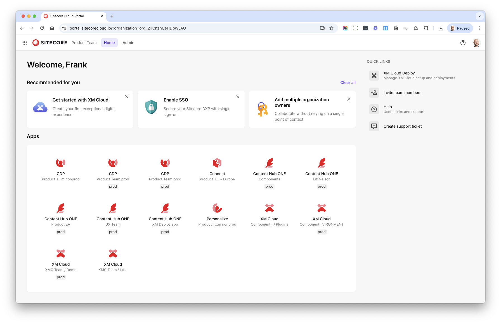
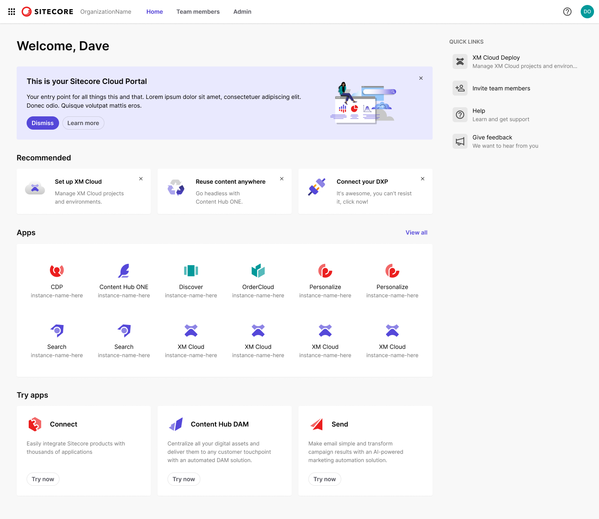
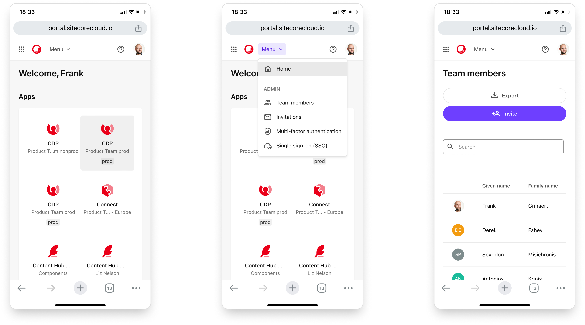

Frank Grinaert
Lead Product Designer specialised in enterprise software and design systems.
Passionate about product development, devoted to cross-functional collaboration.
💜 I love…
- Working with passionate people who are the best at what they do.
- The opportunity to continue learning and growing, as a designer and a lead.
🧭 Values
- Craft
- Curiosity
- Humility
- Transparency
Design system for World Food Programme
Rebuilt the design system for the UN World Food Programme.
WFP · Design system
Context
A careful audit of the existing design system revealed that it did not provide the developer experience required to drive adoption, and technologically wasn’t sufficiently future-proof and maintainable.
After close deliberation with the Solution Architects team, it was decided to start fresh.
A new foundation
Actively in development, since Nov 2025:
Internal presentation, to socialise the initiative:
Accessible colour system
Full revision of the colour system, to ensure accessible contrast with ease:
Design system for Sitecore
Developed a full new design system, bringing UX consistency and accelerating frontend development across a patchwork of products and teams.
Sitecore · Design system
{kind=link}
Context
Following a wave of acquisitions, Sitecore’s product portfolio (and organisation) was a mixed bag of legacy apps, acquired products, and new start-ups.
We needed a way to create a cohesive and consistent user experience across the platform, and ensure a standard of quality for usability, accessibility, and responsiveness throughout.
Challenges
I took ownership of the fledgling design system project, which consisted of a rudimentary Figma library and a handful of code components, with no dedicated team to maintain it.
Extensive interviews with developers showed me they found the existing tools difficult to use effectively. They were not actually getting any of the presumed gains in quality or efficiency.
Reboot
To address the pain points, we needed to reboot the design system. I recruited a few passionate dev volunteers from various teams. They helped build the foundation. I then learned enough coding to fill out the rest myself.
A few months later, the new design system was born, with its very own website:
The Blok website served as a one-stop documentation portal for all things design system: React components, code samples, design tokens, style guide, coding guidelines, brand assets, Figma libraries, and content writing guidelines—all of which I created from scratch.
Launch & evangelisation
I launched the new design system through a series of presentations, including at the R&D Town Hall, and at a Sitecore user conference:
Roll-out
Next began my campaign to migrate as many products as possible to Blok. I worked with Product Managers to prioritise adoption and with Engineers to execute it, offering hands-on assistance with code and best practices.
Blok has been a huge success: it has helped 12+ teams build better experiences more efficiently, and now functions as a shared language between Design & Engineering.
Click to expand: Internal blog post to mark the successful roll-out
{kind=link}
The response from the dev community was very positive:
- “It's cool how quickly you can get results.”
- “Lot less focus for us on making it look right.”
- “We can focus more on building functionality and providing value.”
- “Much cleaner and more maintainable code.”
- “It saved us tons of time.”
- “We were able to close a lot of QA tickets.”
Lessons
This experience had me launch a zero-to-one project without resources, by generating internal momentum and attracting contributors. It has taught me that there is always a way, and that relationships are everything.
It pushed me to learn basic front-end coding in React and how to publish and maintain an NPM package.
It solidified my belief that you don’t really have a design system unless you have reusable code.
Sitecore unified Cloud Portal & App switcher
Designed and built a single point of entry for the nascent Sitecore DXP platform.
Sitecore · User research · Platform unification
{kind=link}

Context
Following Sitecore’s many acquisitions, I understood customers would need a single point of entry to the fragmented product portfolio, and a way to easily switch between products, as is common for multi-product platforms.
Slides: Sitecore’s design challenge
Getting the job
Passionate about unification and branding, I showed Sitecore’s CPO a quick-and-dirty concept for a unified portal & app switcher, and secured the role of Design Lead on the new Cloud Portal project.
Cloud Portal released
Many beta releases and revisions later, we shipped the Cloud Portal in its current form:
{kind=link}

How we got there
The road to the final design was a rocky one. Due to its many stakeholders and fragmented strategy, the original Cloud Portal had fallen victim to ‘homepage syndrome’ and was bloated with inconsequential features and content.
To illuminate these problems, I ran an early-access user interview programme, which showed that users felt overwhelmed and disoriented with the experience.
I presented the research findings and my recommendations to the team:
The research secured buy-in from Product Management, and I worked with closely with Engineering to implement the fixes.
Lessons
I learned a lot about stakeholder management: how to make ambiguous requirements tangible through iterative prototypes, and how to use data to challenge decisions.
Sitecore Cloud Portal mobile optimisation
Made the Cloud Portal interface usable on mobile.
Sitecore · Responsive design · UI engineering
{kind=link}

Approach
Rather than solving responsiveness screen by screen, improve it iteratively, in an ‘atomic’ way, i.e. making components individually responsive.
This approach increased the reusability of solutions, allowing us to efficiently fix many more screens, across many more products.
Some examples of design specs, as presented to the dev team:
Example: Homepage layout
{kind=link}
{kind=link}
Example: Homepage tiles grid
{kind=link}
{kind=link}
Example: Banner
{kind=link}
{kind=link}
Revised web layout system
Designed a new layout system for Sitecore’s site builder application.
Sitecore · Feature design · Responsive
Context
The XMC Pages application had a very complicated layout system, based on a grid of a configurable number of columns, which was at the same time very complex and quite restrictive (try creating a 5-column section on a 12-column grid). It was also very tedious to build responsive UI.
We needed something simpler, which tried to do less, but better.
Specs
New layout model, as presented to the team:
AI authoring interaction design
Introduced AI-assisted content authoring features in Sitecore’s headless CMS products.
Sitecore · AI · Feature design
Challenge
Bring AI-assisted authoring to the headless content management product.
Prototype
AI-first CMP concept
Conceptual prototype for a new AI-powered content planning and ideation tool.
Sitecore · AI · Discovery
Prototype
Exploratory demo, to facilitate discovery with Product Management: